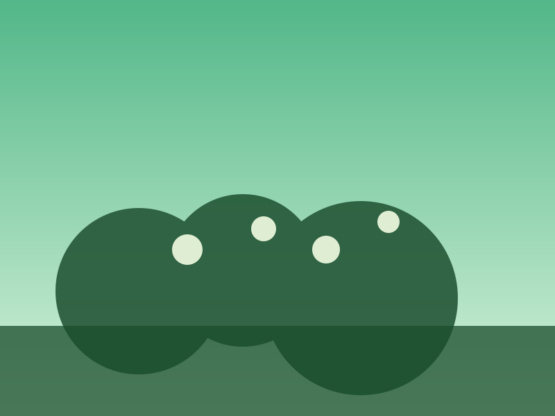

Purpose
The Neighborhood Food Forests project equips communities with regenerative agriculture knowledge while codifying shared governance agreements. By demonstrating abundance and shared responsibility, it reframes local food production as a collaborative commons.
Budget & Funding Goal
Site preparation, soil remediation, perennial plant stock, and workshop facilitation: $28,500.
How to Support
- Donate materials such as tools, rainwater catchment systems, or mulch.
- Volunteer expertise in permaculture design, community organizing, or youth programming.
- Adopt-a-bed to sponsor seasonal maintenance and harvest distribution logistics.
Status
Pilot site secured with soil testing underway. Spring planting events begin soon with governance charters reviewed quarterly.